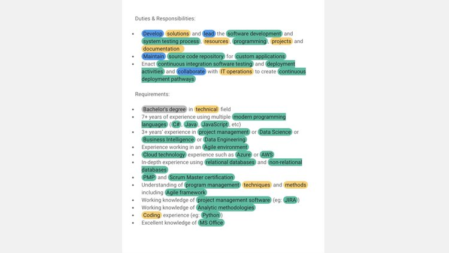

Resume Keyword Scanner
ResumeRevamp intelligently scans a job description and extracts keywords that are missing from your resume.
Reveal your resumes missing
keywords
Don't waste time manually highlighting job descriptions.
ResumeRevamp compares your resume to a job description and generates a match report instantly.
It identifies relevant keywords present in the job description but missing from your resume, providing targeted insights for improvement. With instant access to this valuable information, you can tailor your resume to match employer expectations more closely.
